Paper-Rethinking Text Segmentation：A Novel Dataset and A Text-Specific Refinement Approach
目录
资源
- 原文：[2011.14021v1] Rethinking Text Segmentation: A Novel Dataset and A Text-Specific Refinement Approach (arxiv.org)
- 代码：SHI-Labs/Rethinking-Text-Segmentation: [CVPR 2021] Rethinking Text Segmentation: A Novel Dataset and A Text-Specific Refinement Approach (github.com)
笔记
文本分割（text segmentation）是很多任务的先决条件！如文本样式迁移（text style transfer）和场景文本移除（scene text removal）。
TextSeg
最近一次公共文本分割挑战在 2013-2015 年，由 ICDAR 主办。只有数据集：
- Total Text
- COCO TS
- MLT_S
都只有场景文本，没有艺术设计文本。
目前数据集太少了啊啊啊啊！但是我们提出了一种新的数据集 TextSeg！
4024 张图像
- 2646 训练集
- 340 验证集
- 1038 测试集
具有六种类型的注释：
单词 word
字符 character
边界多边形 bounding polygons
蒙版 masks
转录 transcriptions
阴影、3D、光晕等也进行了注释
先进之处：
- 来自不同来源，样式更多
- 注释更全面
- accurate masks 更准确
TexRNet
早期都是用阈值法进行分割，对复杂颜色和纹理的场景文本图像就 GG。深度学习方法：SMANet。
提出了一种新的文本分割网络：TexRNet！
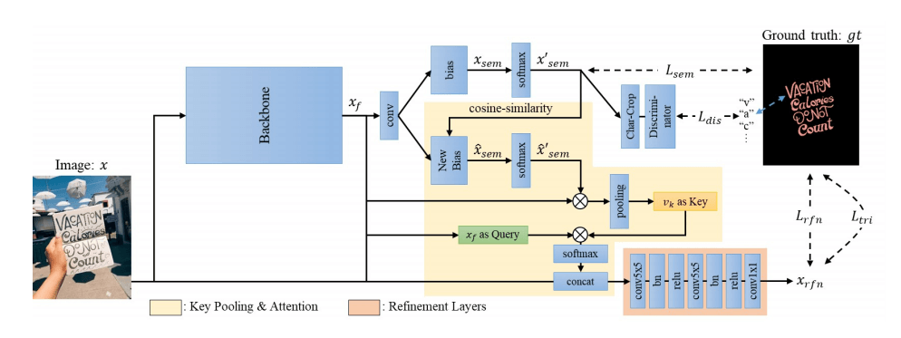
- 适应了文本的独特特性，如非凸边界、不同纹理等。
- DeeplabV3+ 或 HRNet
- ResNet101-DeeplabV3+ 和 HRNetV-W48 是语义分割领域的里程碑和最先进的作品
- 有效的网络模块：关键特征池（key features pooling）和基于注意力的相似性检查（attention-based similarity checking）
- 关键特征池：使用余弦相似性学习文本纹理
- 基于注意力的相似性检查，使用一个注意力层，用 $v$ 作为关键字，$x_f$ 作为查询，并通过点积和 softmax 来计算查询关键字的相似性 $x_{att}$：$x_{att}=\mathrm{Softmax}(v^T\cdot x_f),x_{att}\in \mathbb{R}^{c\times n}$
引入了三映射（trimap loss）和鉴别器（glyph discriminator）损失
关注边界的损失函数将进一步提高文本的精度
- $\mathcal L_{tri}=\mathrm{WCE}(x_{rfn},x_{gt},w_{tri})\\\mathrm{WCE}(x,y,m)=-\frac{\sum^m_{j=1}w_j\sum^c_{j=1}x_{i,j}\log(y_{i,j})}{\sum^n_{j=1}w_j}$
- $w_{tri}$ 是文本边界上值为 1、其他地方为 0 的二进制映射
- $\mathrm{WCE}(x,y,w)$ 是由空间映射 $w$ 加权的 $x$ 和 $y$ 之间的交叉熵
- $\mathcal L_{tri}=\mathrm{WCE}(x_{rfn},x_{gt},w_{tri})\\\mathrm{WCE}(x,y,m)=-\frac{\sum^m_{j=1}w_j\sum^c_{j=1}x_{i,j}\log(y_{i,j})}{\sum^n_{j=1}w_j}$
预训练用于字符识别的分类器，有 37 个类，包含 26 个字母，10 个数字和 misc
- 最终损失函数：$\mathcal L = \mathcal L_{sem} +\alpha\mathcal L_{rfn} +\beta\mathcal L_{tri} +\gamma\mathcal L_{dis}$
代码
TextSeg
我们的数据集（TextSeg）仅供学术界使用，不能用于任何商业项目和研究。要下载数据，请向 textseg.dataset@gmail.com 发送请求电子邮件，并告诉我们您隶属于哪所学校。
但是网上居然还是能找到下载地址……：TextSeg 大规模文本检测及分割数据集 - 数据集下载 - 超神经 (hyper.ai)
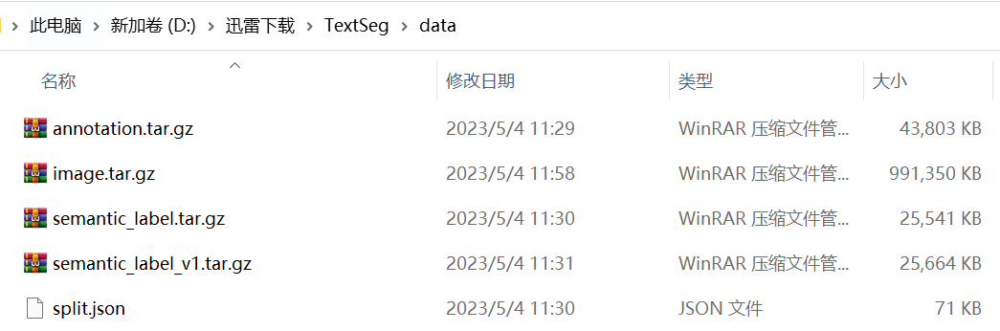
image.tar.gz包含 4024 张图像。annotation.tar.gz与图像对应的标签。包括以下三种类型的文件：
[dataID]_anno.json包含所有单词和字符级别的翻译以及边界多边形。[dataID]_mask.png包含所有字符掩码。字符掩码标签值将从 1 到 n 排序。标签值 0 表示背景，255 表示忽略。[dataID]_maskeff.png包含所有具有效果的字符掩码。Adobe_Research_License_TextSeg.txt许可证文件。
semantic_label.tar.gz包含所有字级（语义级）掩码。它包含：
[dataID]_maskfg.png0 表示背景，100 表示单词，200 表示单词效果，255 表示忽略。（也可以使用[dataID]_maskfg.png、[dataID]_mask.png和[dataID]_maskeff.png)
split.json训练集，验证集和测试集的官方拆分。[可选]我们论文中使用的旧版本标签。可以下载它以复制我们的论文结果。
semantic_label_v1.tar.gz
TexRNet
有两种 Backbone，效果各有千秋？
- HENetV-W48
- DeeplabV3+
从 TexRNet - Google Drive 下载相应内容：
测试：
texrnet_hrnet.pth或texrnet_deeplab.pth训练：
init/*
配置
- 新建一个 conda 环境：
|
|
- 使用离线安装方式安装
pytorch（被坑了 n 次逐渐熟练了orz，还是离线安装的方式好使），从 download.pytorch.org/whl/torch_stable.html 下载对应版本的pytorch和torchvision：
torch-1.13.1+cu117-cp37-cp37m-win_amd64.whltorchvision-0.14.1+cu117-cp37-cp37m-win_amd64.whl
不知道为什么今天 edge 下载得特别慢，用迅雷了。
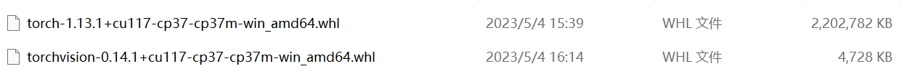
|
|
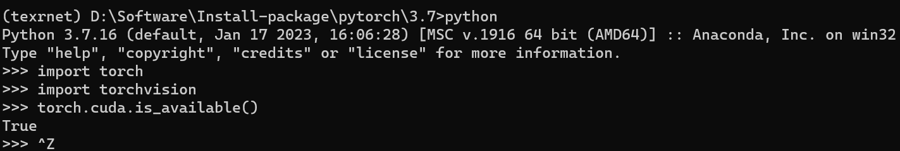
在仓库目录下，将
requirement.txt里的torch==1.6和torchvision==0.7删掉，然后执行：
|
- 在仓库目录下，新建好下列文件夹：
pretrainedpretrained/init
datalog
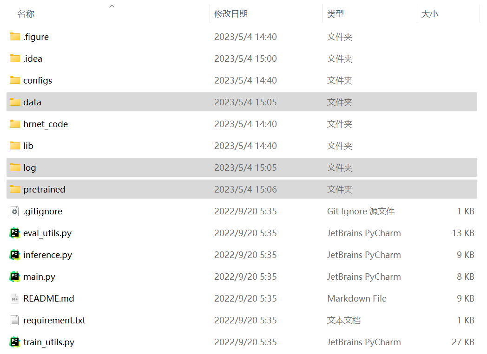
- 放置数据库在
data/TextSeg中：
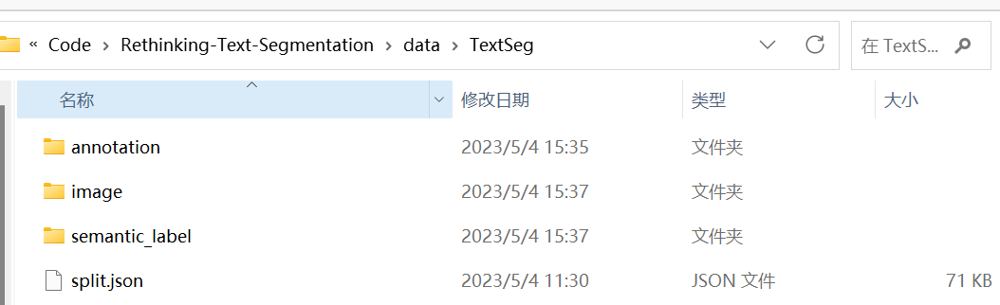
测试
先改代码！Windows 下踩坑：Pytorch报错解决——（亲测有效）RuntimeError: Distributed package doesn‘t have NCCL built in_康康好老啊的博客-CSDN博客。pycharm 中
ctrl+shift+r将所有nccl替换为gloo设置参数：
--eval --pth pretrained/texrnet_hrnet.pth --hrnet --gpu 0 --dsname textseg
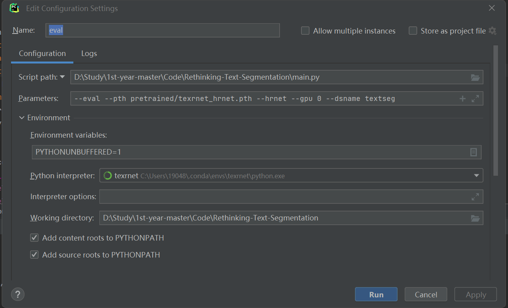
- 能跑，GPU 风扇疯狂转，吓得我赶紧停了😅。还是用服务器吧呜呜呜……
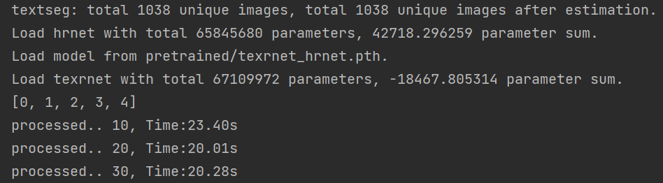
测试
- 设置参数：
--hrnet --gpu 0 --dsname textseg --trainwithcls
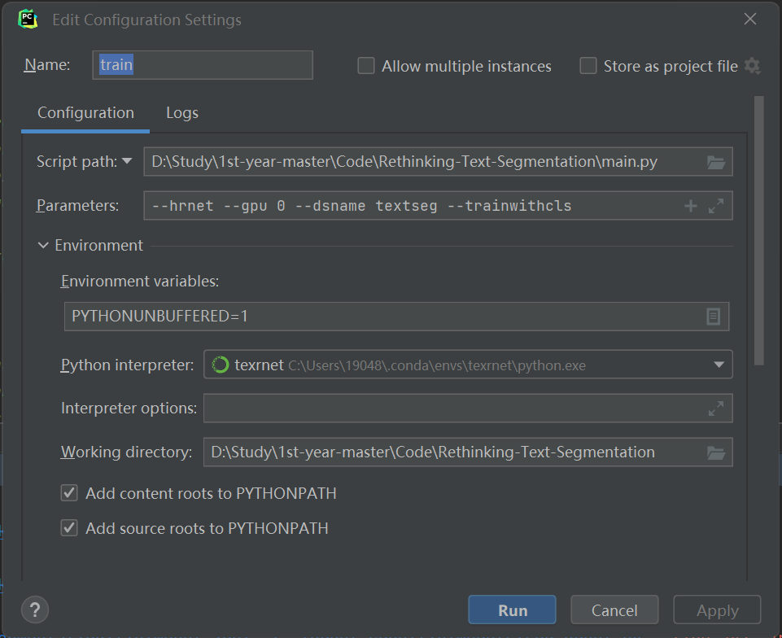
- 踩坑，在
data\TextSeg中，把annotation文件夹名称修改为bpoly_label
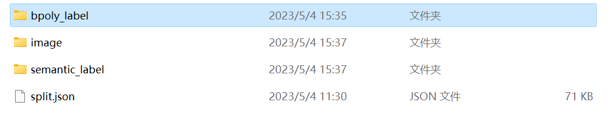
- 应该能 train 吧，显示显存不够是真的牛逼😅。还是用服务器吧呜呜呜……（是不是调成 gloo 的问题？该好好学 linux 了呜呜呜）
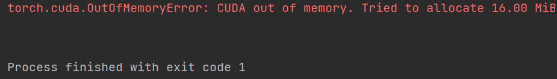